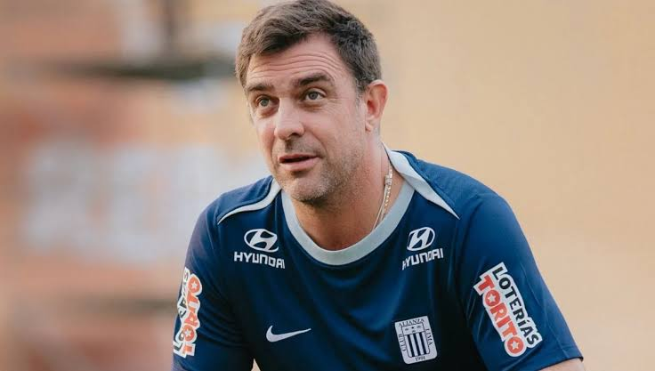

03 DE SEPTIEMBRE DE 2026
¿Renunció Guede?
Pablo Guede tuvo una conversación con la dirigencia de Alianza Lima.
LEER MÁS
¿Renunció Guede?
Pablo Guede tuvo una conversación con la dirigencia de Alianza Lima, generando expectativa entre los seguidores del club.
La situación del entrenador y las decisiones de la institución son parte de los temas que generan interés en la actualidad deportiva.
Cualquier información definitiva sobre su continuidad debe ser confirmada por el club o por fuentes periodísticas verificables.
Fuente: Portal de Noticias Perú